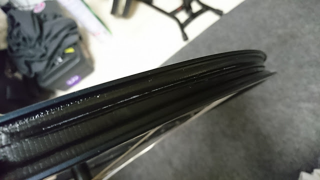
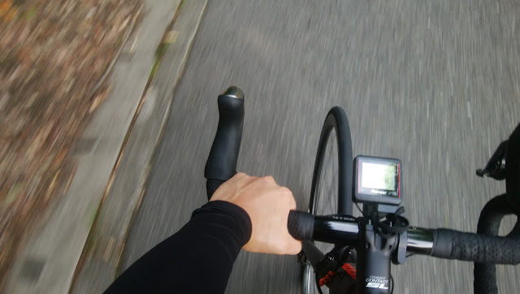
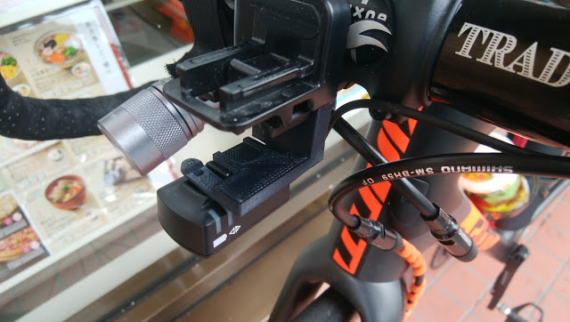

格安サイコンbryton Rider310を使ってみた 2017-09-27 格安GPSサイコン代表選手 Edge25Jが王滝完走するだけの間、バッテリーが持たなかったので新たにGPSサイコンを買うことに。 オフロード用途 ...
新型Formula Pro X-Guardにタイヤ交換 2017-09-15 もうパンクしたくないです… 春のグラベルクリテでパンクの嵐に遭ったことで基本のタイヤ幅を上げることに。ロードチューブレスに関しては安心と信頼 ...
 ダクトテープでチューブレス化：続 2017-08-17 そして翌朝 この記事は前回の続きです。 翌朝起きたら見事にタイヤが萎んでいました。悲しい… 開けてみるとご覧の通りテープがちょっとずれてる、そして ...
 夏こそ長袖インナーを着ろ 2017-07-17 日焼けとの終わりなき戦い 夏場は日焼けがつらいですね。ロードバイクのように長い時間屋外にいる競技では、一般的なウォータープルーフの日焼け止め ...
ロードバイク春秋レイヤリング 2017-04-25 長い長い冬が終わり、ようやく桜が咲いたり散ったりする季節。 朝は冷え込み昼は暑く夕方は寒い。花粉は…アイキャッチのように防御しよう。 冬は着込め ...
使ってよかったMTBパーツ：ESI Grips & Brand-X Ascend Dropper post 2017-04-17 組んだばかりのMTBを早速シェイクダウンへ、トレイルが近い家は良い。 モリモリ登ってモリモリ下る。 地元のMTBerのアテンドで何本かのトレイル ...
New bike : Ragley Mmmbop 27.5′ 2017-04-14 3度目のMTB 買っては乗らなくなり、売り払い、また買うという行為を繰り返していたがこんどこそ3度目の正直。 ディスクロード購入で、夏シーズンロ ...
MY PROTEINの激安ホエイプロテインを買ってみた 2017-04-02 圧倒的コストパフォーマンス 今まで愛用してたバルクスポーツのソイプロが切れたのを契機に、身の回りで話題になっているMYPROTEINのホエイプ ...
 SGX-CA500にDi2ジャンクションを取り付けるマウントを自作した 2017-03-25 無ければ作れ 身長が低いときに悩む要素のひとつ。Di2ジャンクションの配置。 ステムが短いのでステム下にバンドで装着する基本的な方法はNG。スペ ...
「ディスクロード」のインプレッション 2017-03-24 ディスクロード元年説 昨年のロードシーズン終了後、ロードバイクをTCR ADVANCED PRO DISCに乗り換えた。 ディスクロードは2015年あたりから少しづつ ...